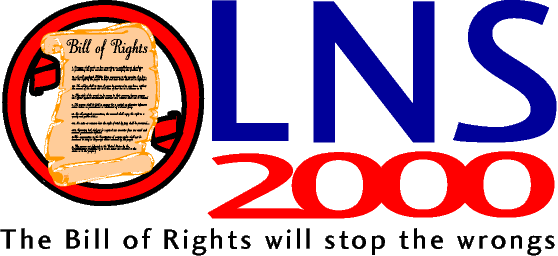

L. Neil Smith's Fourth of July Announcement
Happy Independence Day!
Let me get right to the point.
Borrowing from former President Cory Aquino of the Philippines, I've chosen the 223rd anniversary of American independence to say that, if those who want me to do it will collect 1,000,000 petition signatures to convince me I'm not wasting everybody's time and energy, I'll run for President of the United States in the year 2000 as an independent.
Decades ago, when I was my nine-year-old daughter's age, I calculated that I'd be 53 years old when the year 2000 arrived. I envisioned a brilliant, colorful future, based on the science fiction I was reading and possibilities I'd learned to imagine for myself. (I never considered the possibiliy that we'd be less free than we were in the 1950s.) I assumed that by now we'd all be flying to work in personal helicopters or even on flying belts, visiting with each other by videophone, living in undersea domes, vacationing on the Moon or Mars. Aging and disease would be wiped out.
Instead, over the next 40-odd years, most possibilities like that, (and many more I failed to foresee), were eaten up by taxes to support the "Welfare-Warfare State" and by regulations that were insane and unconstitutional. Government terrorism began turning my daydreams into nightmares, having begun (although I didn't know it at the time) with Operation Keelhaul and the persecution of Wilhelm Reich (to pick two examples), and climaxing (but certainly not ceasing) with Ruby Ridge and the butchery we all witnessed at Mount Carmel in 1993.
Don't ask when it's going to happen, America is a police state now. At this point, instead of a brilliant, colorful future, it's likelier to be a future resembling Beirut at the fiercest of the fighting there, or Dachau at the worst moment of the Holocaust. All of my adult life, since I was a politically precocious 14, I've worked as hard as I could to prevent that kind of future, and the bitter, bloody civil war -- a war both Republicans and Democrats seem hell-bent on provoking -- that many of my wisest friends now believe is inevitable.
But I still want my 21st century, not the Clintons' or the Bushes'. And I suspect you want it, too, or I wouldn't be doing this. I want it for myself, for my wife, and most of all I want it for my little girl. Like me, she writes. I want her to write, while she's a child, about sunshine, butterflies, and flowers, not machineguns, razor wire, and Ferret missiles. I want her to live as an adult and raise her own children amidst the peace, freedom, progress, and prosperity I grew up believing were the birthright of every American.
Of every human being.
Over the past decades I've personally tried many approaches -- and observed many more -- to reclaiming our Revolutionary heritage and advancing, once again, the cause of liberty. Every one has failed and we are worse off than when we started. From that long, disappointing experience, I've come to believe that the best "flag" to rally round is the one left to us by our 18th century ancestors.
Indeed, I've said in print and at the lectern that any difference between a society created by the most radical Libertarian Party platforms I helped to write in the 70s, and the society that would arise from stringent enforcement of the first ten amendments to the Constitution would merely be a matter of "fine tuning".
The first ten amendments to the Constitution.
My platform is enforcement of the Bill of Rights.
My first act as President would be to order the arrests of Bill Clinton, Janet Reno, and Webster Hubbell for what they did at Waco, to round up everybody else responsible for what happened there, and put them on trial for their lives.
I would also invite Michael New, the young soldier who refused to obey United Nations commanders, to the White House to give him a medal and appoint him to oversee our military disentanglement from NATO and the UN.
I would then empty America's prisons by turning the White House into an Executive Clemency factory, if necessary, with the proper forms stacked to the ceiling, until the War on Drugs, America's 25,000 gun laws, and all other victimless crime laws were repealed or nullified.
And, like the ancient Roman senator Cato the Elder who demanded after every speech that "Carthage must be destroyed", I would end my every public utterance, no matter what else it had been about, by reminding potential jury members across the country of their 1000 year old right and duty to judge the law itself, as well as the facts of the case.
I want to make it clear that I don't believe I'll be sleeping at 1600 Pennsylvania Avenue any time in the next century. My goal (a realistically achievable one) is to establish beyond a shadow of a doubt that there's a constituency for the Bill of Rights too large to ignore -- or to abuse any further.
Rely on me to tell the truth and remain within the principles that have guided my life for nearly 40 years. There's no mythical "Great Unwashed" to be fooled or coddled here, no "gentle sensibilities" to be protected. It's far too late for that. There's no need for "outreach" in any conventional sense. All we have to do to change the course of history -- although it's a huge task -- is to find and gather together everyone who already basically agrees with us.
Over the coming months, I plan to make heavy use of the internet, and to supplement that with occasional video and audio tapes. Although I'll be dealing with specific issues each time, my basic message will always be the same: if you want to see the Bill of Rights stringently enforced, tell me, by signing my petition.
Some folks are asking if they can give me money. Technically, I'm not a candidate, just somebody whose friends are trying to persuade him to run. Accepting political contributions is complicated, and I have no mechanism for doing it at the moment. Later, proper and legal arrangements will have to be made. For now, if you wish to help, buy my books. I've attached a list of them, the various forms in which they're published, and where they can be purchased.
I've been asked about my independent candidacy -- whether I'd refuse the nomination of the Libertarian Party, which I joined in 1972. (I've learned only recently of a group who want to draft me as the LP candidate for President.) I believe the LP has reached a point where, if I were to walk into its convention with a million petition signatures, or five million, or ten million, the clique that owns the party would still find an excuse to reject my candidacy.
But if the laws of physics and human nature were repealed and the LP membership did ask me to be their candidate, after all these years, I couldn't find it in my heart to say no.
A last item. My friends will actually be collecting 2,000,000 signatures, just to make sure. This allows me a personal indulgence. One of the dreams that stirs me most is an International Bill of Rights Union to counterbalance the New World Order. My father was in the Air Force and I grew up in Canada. For those reasons, I'll accept petition signatures from there, from Great Britain (because we have British comrades who are being oppressed), from Australia, and from New Zealand.
We're still working on technical details concerning our online petitions, but I wanted to get this announcement out on what is, for me, the happiest and most important day of the year. I'll send out a follow-up message when we're ready. In the meantime, if you have any questions, write to me lneil@netzero.com, or to my friend and associate John Taylor, who's kindly agreed to help me.
Sincerely yours,
L. Neil Smith
L. Neil Smith is the award-winning author of more than 20 books, mostly highly political science fiction. Those presently available include:
This article originally appeared on the Internet, and in the July 4, 1999 issue of The Libertarian Enterprise.
© 1999 by L. Neil Smith